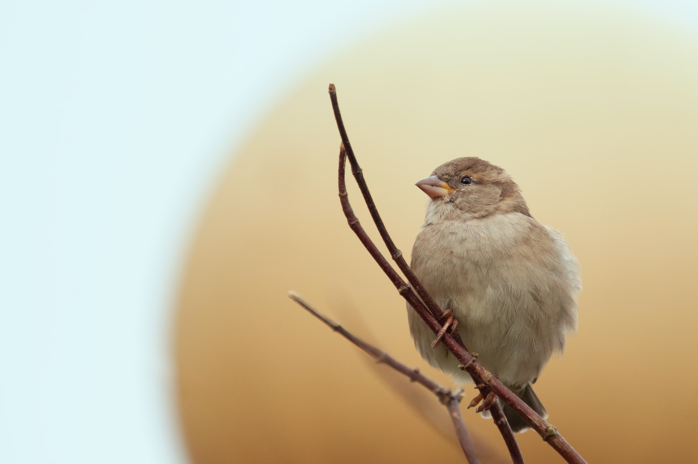

“The best and most beautiful things in the world cannot be seen or even touched. They must be
felt with the heart.”
– Helen Keller
“The emotion that can break your heart is sometimes the very one that heals it.”
– Nicholas Sparks
“Positive feelings come from being honest about yourself and accepting your personality, and
physical characteristics, warts and all; and, from belonging to a family that accepts you without question.”
– Willard Scott
“Some people use their own hurt as an excuse for hurting others.”
– Rolland Merullo
“Creativity is an inherent human quality of the highest order. When we create, we become more
than the sum of our parts.”
– Yanni
“To my mind, having a care and concern for others is the highest of the human qualities.”
– Fred Hollows
“Sometimes your mind says No but your heart says Go.”
– Yvonne Urlanda
“Do not give in too much to feelings. A overly sensitive heart is an unhappy possession on
this shaky earth.”
– Johann Wolfgang von Goethe

“I have feelings too. I am still human. All I want is to be loved, for myself and for my
talent.”
– Marilyn Monroe
“Feelings are not supposed to be logical. Dangerous is the man who has rationalized his
emotions.”
– David Borenstein
“One of the greatest feelings in the world is knowing that we as individuals can make a
difference.”
– Jeff Bridges
“There is no instinct like that of the heart.”
– Lord Byron
“Emotions are celebrated and repressed, analyzed and medicated, adored and ignored — but
rarely, if ever, are they honored.”
– Karla McLaren
“There is no feeling, except the extremes of fear and grief, that does not find relief in
music.”
– George Eliot
“The deepest feeling always shows itself in silence; not in silence, but restraint.”
– Marianne Moore
“Don’t allow your mind to tell your heart what to do. The mind gives up easily.”
– Paulo Coelho
“It’s often just enough to be with someone. I don’t need to touch them. Not even talk. A
feeling passes between you both. You’re not alone.”
– Marilyn Monroe
“We try so hard to hide everything we’re really feeling from those who probably need to know
our true feelings the most. People try to bottle up their emotions, as if it’s somehow wrong to have natural
reactions to life.”
– Colleen Hoover
“Smiles and tears are so alike with me, they are neither of them confined to any particular
feelings: I often cry when I am happy, and smile when I am sad.”
– Anne Brontë
“There could have been no two hearts so open, no tastes so similar, no feelings so in
unison.”
– Jane Austen